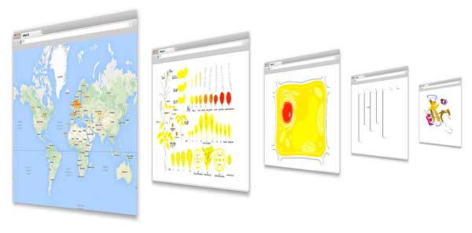

ePlant
Jamie Waese, Jim Fan, Asher Pasha, Hans Yu and Nicholas Provart
Department of Cell & Systems Biology, University of Toronto
ePlant helps biologists visualize the natural connections between DNA sequences, natural variation (polymorphisms), molecular structures, protein-protein interactions, and gene expression patterns by combining several data visualization tools with a zoomable user interface.

ePlant connects to several publicly available web services to download the latest genome, interactome, and transcriptome data for any number of genes or gene products you may be interested in. Data is displayed with a set of visualization tools that are presented with a conceptual hierarchy from big to small. Links between the different views help underscore connections between multiple levels of analysis.
You may be familiar with some of our visualization tools. We used Cytoscape.js for the protein interactions, JSmol for the 3D molecular structure view, and Araport.org's JBrowse instance for the genome browser. The rest of ePlant was custom written with Javascript and runs locally in your browser.
ePlant was built to be species agnostic. Please contact us if there is a particular species you would like to add. This project was funded with grants from Genome Canada and NSERC.
This is a continuation of the original ePlant project by Fucile et al. (2011).